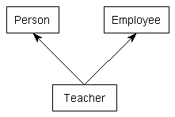

24.9 — 多重继承
到目前为止，我们介绍的所有继承示例都是单继承——即每个派生类只有一个父类。然而，C++ 提供了实现多重继承的能力。 多重继承 使得派生类可以从多个父类继承成员。
假设我们想编写一个程序来跟踪一群教师。教师是一个人。然而，教师也是一名雇员（如果为自己工作，他们就是自己的雇主）。多重继承可用于创建一个 Teacher 类，该类从 Person 和 Employee 继承属性。要使用多重继承，只需指定每个基类（就像单继承一样），用逗号分隔。

#include <string>
#include <string_view>
class Person
{
private:
std::string m_name{};
int m_age{};
public:
Person(std::string_view name, int age)
: m_name{ name }, m_age{ age }
{
}
const std::string& getName() const { return m_name; }
int getAge() const { return m_age; }
};
class Employee
{
private:
std::string m_employer{};
double m_wage{};
public:
Employee(std::string_view employer, double wage)
: m_employer{ employer }, m_wage{ wage }
{
}
const std::string& getEmployer() const { return m_employer; }
double getWage() const { return m_wage; }
};
// Teacher 公开继承自 Person 和 Employee
class Teacher : public Person, public Employee
{
private:
int m_teachesGrade{};
public:
Teacher(std::string_view name, int age, std::string_view employer, double wage, int teachesGrade)
: Person{ name, age }, Employee{ employer, wage }, m_teachesGrade{ teachesGrade }
{
}
};
int main()
{
Teacher t{ "Mary", 45, "Boo", 14.3, 8 };
return 0;
}
Mixin
一个 mixin （也拼写为“mix-in”）是一个小类，可以从中继承以向类添加属性。名称 mixin 表明该类旨在混合到其他类中，而不是单独实例化。
在以下示例中， Box， Label、和 Tooltip 类是我们继承以创建新类的 mixin。 Button 类。
// 感谢读者 Waldo 提供此示例
#include <string>
struct Point2D
{
int x{};
int y{};
};
class Box // mixin Box 类
{
public:
void setTopLeft(Point2D point) { m_topLeft = point; }
void setBottomRight(Point2D point) { m_bottomRight = point; }
private:
Point2D m_topLeft{};
Point2D m_bottomRight{};
};
class Label // mixin Label 类
{
public:
void setText(const std::string_view str) { m_text = str; }
void setFontSize(int fontSize) { m_fontSize = fontSize; }
private:
std::string m_text{};
int m_fontSize{};
};
class Tooltip // mixin Tooltip 类
{
public:
void setText(const std::string_view str) { m_text = str; }
private:
std::string m_text{};
};
class Button : public Box, public Label, public Tooltip {}; // 使用三个 mixin 的 Button
int main()
{
Button button{};
button.Box::setTopLeft({ 1, 1 });
button.Box::setBottomRight({ 10, 10 });
button.Label::setText("Submit");
button.Label::setFontSize(6);
button.Tooltip::setText("Submit the form to the server");
}
您可能想知道为什么我们使用显式的 Box::， Label::、和 Tooltip:: 作用域解析前缀，而在大多数情况下这并非必要。
Label::setText()和Tooltip::setText()具有相同的原型。如果我们调用button.setText()，编译器将产生一个歧义函数调用编译错误。在这种情况下，我们必须使用前缀来消除我们想要哪个版本的歧义。- 在非歧义的情况下，使用 mixin 名称提供了函数调用适用于哪个 mixin 的文档，这有助于使我们的代码更易于理解。
- 非歧义的情况将来可能会因为添加额外的 mixin 而变得歧义。使用显式前缀有助于防止这种情况发生。
进阶读者
由于 mixin 旨在向派生类添加功能，而不是提供接口，因此 mixin 通常不使用虚函数（将在下一章介绍）。相反，如果 mixin 类需要以特定方式定制才能工作，通常使用模板。因此，mixin 类通常是模板化的。
也许令人惊讶的是，派生类可以使用派生类作为模板类型参数从 mixin 基类继承。这种继承称为 奇异递归模板模式 （简称 CRTP），看起来像这样：
// 奇异递归模板模式 (CRTP)
template <class T>
class Mixin
{
// Mixin<T> 可以使用模板类型参数 T 通过 (static_cast<T*>(this)) 访问 Derived 的成员
// 通过 (static_cast<T*>(this))
};
class Derived : public Mixin<Derived>
{
};
您可以在以下位置找到使用 CRTP 的简单示例 这里。
多重继承的问题
虽然多重继承似乎是单继承的简单扩展，但多重继承引入了许多问题，这些问题会显著增加程序的复杂性并使其成为维护的噩梦。让我们看看其中一些情况。
首先，当多个基类包含同名函数时，可能会导致歧义。例如：
#include <iostream>
class USBDevice
{
private:
long m_id {};
public:
USBDevice(long id)
: m_id { id }
{
}
long getID() const { return m_id; }
};
class NetworkDevice
{
private:
long m_id {};
public:
NetworkDevice(long id)
: m_id { id }
{
}
long getID() const { return m_id; }
};
class WirelessAdapter: public USBDevice, public NetworkDevice
{
public:
WirelessAdapter(long usbId, long networkId)
: USBDevice { usbId }, NetworkDevice { networkId }
{
}
};
int main()
{
WirelessAdapter c54G { 5442, 181742 };
std::cout << c54G.getID(); // 我们调用哪个 getID()？
return 0;
}
当 c54G.getID() 被编译时，编译器会查看 WirelessAdapter 是否包含名为 getID() 的函数。它没有。然后编译器查看任何父类是否包含名为 getID() 的函数。看到问题了吗？问题是 c54G 实际上包含两个 getID() 函数：一个继承自 USBDevice，另一个继承自 NetworkDevice。因此，这个函数调用是歧义的，如果您尝试编译它，将会收到编译器错误。
然而，有一种方法可以解决这个问题：您可以显式指定您想调用哪个版本：
int main()
{
WirelessAdapter c54G { 5442, 181742 };
std::cout << c54G.USBDevice::getID();
return 0;
}
虽然这个解决方法相当简单，但您可以看到当您的类继承自四个或六个基类，而这些基类本身又继承自其他类时，事情会变得多么复杂。随着您继承更多的类，命名冲突的可能性呈指数级增长，并且每个命名冲突都需要显式解决。
其次，更严重的是 菱形问题，作者喜欢称之为“厄运菱形”。当某个类多重继承自两个类，而这两个类又各自继承自同一个基类时，就会发生这种情况。这导致了一个菱形继承模式。
例如，考虑以下类集：
class PoweredDevice
{
};
class Scanner: public PoweredDevice
{
};
class Printer: public PoweredDevice
{
};
class Copier: public Scanner, public Printer
{
};

扫描仪和打印机都是供电设备，因此它们派生自 PoweredDevice。然而，复印机结合了扫描仪和打印机的功能。
在这种情况下会出现许多问题，包括 Copier 应该有一个还是两个 PoweredDevice 副本，以及如何解决某些类型的歧义引用。虽然大多数这些问题可以通过显式作用域解决，但为了处理增加的复杂性而添加到类中的维护开销可能会导致开发时间激增。我们将在下一章（第 25.8 节 -- 虚基类)。
多重继承是否得不偿失？
事实证明，大多数可以使用多重继承解决的问题也可以使用单继承解决。许多面向对象语言（例如 Smalltalk、PHP）甚至不支持多重继承。许多相对现代的语言（如 Java 和 C#）将普通类的继承限制为单继承，但允许接口类的多重继承（我们稍后将讨论）。这些语言禁止多重继承的核心思想是，它只会使语言过于复杂，并且最终带来的问题多于解决的问题。
许多作者和经验丰富的程序员认为，由于多重继承带来的许多潜在问题，应该不惜一切代价避免在 C++ 中使用多重继承。作者不同意这种方法，因为有时在某些情况下多重继承是最好的方式。然而，多重继承应该极其谨慎地使用。
有趣的是，您已经在不知不觉中使用了使用多重继承编写的类：iostream 库对象 std::cin 和 std::cout 都是使用多重继承实现的！
最佳实践
除非替代方案导致更复杂，否则避免多重继承。